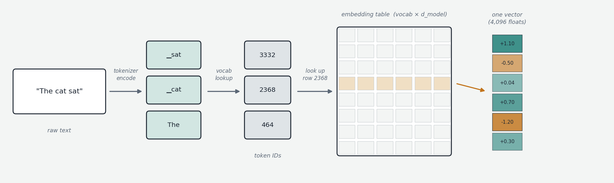
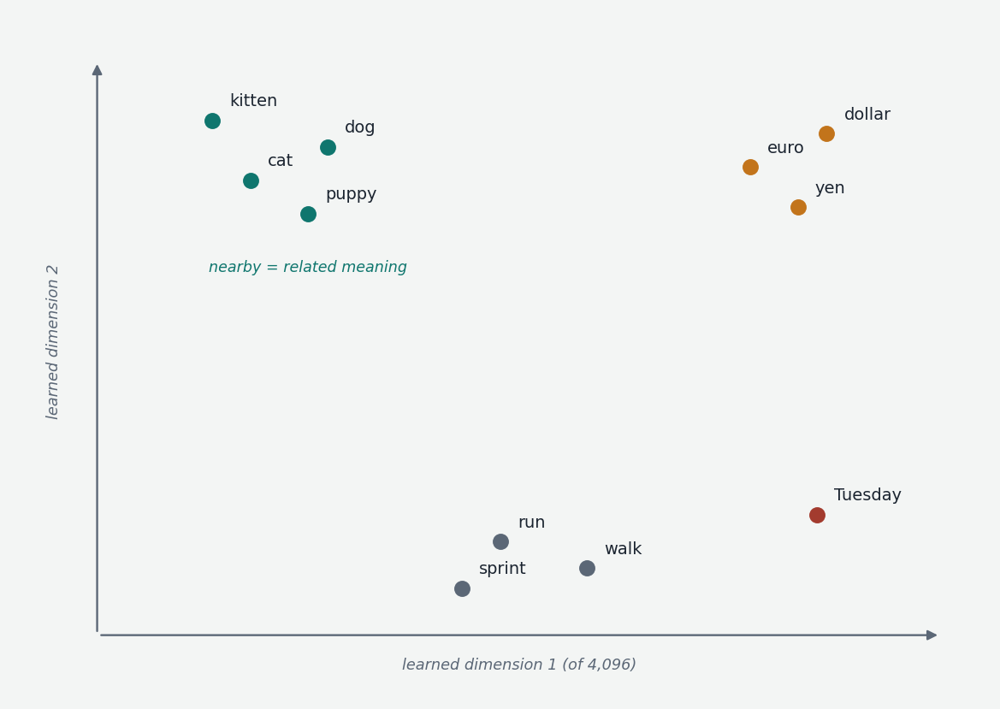

A neural network is a math machine. It multiplies numbers, adds them, applies functions to them — that is the whole repertoire. It cannot operate on the letter "h" or the word "trading" directly. So before anything interesting can happen, text must be turned into numbers — and not just any numbers, but numbers organized so the model can do useful work with them. This chapter covers that boundary between human text and the model's numerical world. There are two conversions hidden inside it: text becomes integer IDs (the tokenizer's job), and integer IDs become vectors (the embedding layer's job). Many of the practical quirks of LLMs — pricing asymmetries, multilingual performance gaps, arithmetic peculiarities — live right here.

A note on the name before we start. The architecture this course describes is the transformer, introduced in the 2017 paper Attention Is All You Need. It was built for machine translation — transforming one sequence into another — and the name stuck as the architecture was repurposed for everything else. There is a finer reading too: each layer of the model transforms the representation of every token, and a deep model is a few dozen successive transformations pushing the representations toward "carrying enough context to predict what comes next." Both readings are accurate descriptions of what follows.
Chopping text: tokens
Picking the unit of conversion is harder than it sounds. Individual letters throw away too much — the model would have to relearn from scratch that "t-h-e" means "the". Whole words explode the vocabulary into the millions and leave you stuck on typos and novel words. The standard compromise is to chop text into chunks that are usually pieces of words: common things like "the" or " trading" (spaces are typically part of the token) stay as single chunks; rare words split into several smaller pieces. These chunks are tokens.
The recipe for deciding what the chunks should be is Byte Pair Encoding (BPE). Start with individual characters, scan an enormous pile of text, find the most common adjacent pair (say "t" followed by "h"), merge it into a new chunk, and repeat tens of thousands of times. Frequent letter sequences become single tokens; infrequent ones remain split. The output is a fixed list of, say, 50,000 to 200,000 chunks — the vocabulary. Modern implementations work at the byte level rather than the character level (byte-level BPE, used by the GPT and Llama families): the base vocabulary is all 256 possible byte values, so any text in any language or encoding can be represented — there are no out-of-vocabulary characters, ever. The cost is that scripts requiring multiple bytes per character (Chinese characters are 3 bytes in UTF-8) take more tokens unless the tokenizer has learned merges that re-compress them.
A separate family, SentencePiece (a Google toolkit implementing BPE or a unigram algorithm), treats whitespace as just another character rather than pre-splitting on spaces — replacing spaces with a marker character ("▁") — which makes it apply uniformly to languages that don't use spaces between words. Llama 1 and 2 used SentencePiece; Llama 3 moved to a BPE-flavored tokenizer with a much larger vocabulary (128,000 tokens, up from 32,000) for better non-English coverage. The older WordPiece (BERT's tokenizer, marking word-continuations with "##") is mostly of historical interest.
From chunks to IDs
Once the vocabulary exists, number it: chunk #0, chunk #1, up to the vocabulary size. "the" might be ID 389; " trading" might be 14,723. These integers are pure labels — 389 is not "more than" 388 in any meaningful sense; shuffle the IDs consistently and the system behaves identically. The tokenizer is the deterministic piece of software (not a neural network — it runs fast, on CPU) that performs this conversion in both directions: encoding (text → ID sequence) and decoding (IDs → text, a trivial lookup-and-concatenate).
Two structural facts matter. First, the model and tokenizer are bound for life: the model learned its embedding table against one specific vocabulary, so ID 14,723 means one thing under its tokenizer and gibberish under any other — tokenizers are never interchangeable across model families, and token counts differ for the same text (which is what API billing, context budgeting, and cross-provider comparisons must account for). Second, every vocabulary also contains special tokens — structural markers rather than text: end-of-sequence markers, padding, and in chat models the role markers delimiting system, user, and assistant turns (the ChatML-style <|im_start|>user … <|im_end|> framing). The distinction the model perceives between "system prompt" and "user message" is made physically real by these tokens; they also become the mechanism for tool calls (Chapter 8).
Practical consequences of tokenization
Different tokenizers compress different text differently, with real effects. Cost and context: token count, not character count, is what APIs bill and context windows hold. Multilingual asymmetry: tokenizers are trained on predominantly English corpora, so English compresses best; less-represented languages fragment into many small tokens — costing more, fitting less in context, and carrying less meaning per token, which correlates with weaker model performance. Latin-script languages with rich morphology (Slovenian, say) sit mid-spectrum: inflectional endings often split into tokens that English forms would not. Numbers: how digits chunk affects arithmetic; older tokenizers merged multi-digit substrings inconsistently ("1234" one token, "5678" three), making arithmetic patterns harder to learn, so modern tokenizers (Llama 3, GPT-4o's o200k) tokenize digits individually — less compact, measurably better at math. Code: well-designed tokenizers include common code patterns (indentation runs, keywords) as single tokens; tokenizers trained without code handle it wastefully. And there are genuine pathologies: the famous glitch tokens (the "SolidGoldMagikarp" phenomenon) were vocabulary entries — Reddit usernames, debug strings — frequent in the tokenizer's training corpus but nearly absent from the model's, leaving their embedding rows essentially untrained random vectors that produced bizarre behavior when triggered.
From IDs to vectors: the embedding layer
An integer ID carries no semantic information — it is a name tag. The model needs a representation where similar meanings look similar to the math. That representation is a vector: a list of numbers in fixed order, picturable as a point in space. Three numbers is a point in 3D; real models use vectors of a few thousand entries — each token becomes a point in, say, 4,096-dimensional space (this width is the model's d_model, and it is the width of everything that flows through the network). The reason vectors work: thousands of dimensions give enormous room to encode many aspects of meaning simultaneously. As a toy intuition, imagine axes for "how animate," "how concrete," "how positive" — "cat" lands at (high, high, medium), "freedom" elsewhere — except the model learns its own abstract axes rather than human-labeled ones, whatever 4,096-dimensional structure best serves prediction.

The embedding layer is mechanically just a table: one row per vocabulary token, one column per dimension — 50,000 × 4,096 ≈ 200 million numbers. When token 14,723 arrives, the layer looks up row 14,723 and hands back those 4,096 numbers. That is the entire operation: indexed lookup, despite the imposing name. The entries are decimal numbers (floats) rather than integers because meaning varies continuously along many axes at once.
Where do the table's values come from? Initially, random noise. During training (Chapter 1), they are nudged tiny amounts, millions of times, alongside every other parameter, so that tokens which need to behave similarly drift toward similar rows. By the end, "cat" really does sit near "dog" — not because anyone said so, but because that arrangement reduced prediction error. The row a token receives is its context-free representation: every occurrence of "it" starts from the same vector regardless of surroundings. Everything that follows in the architecture — beginning with attention in the next chapter — is about contextualizing it.
The picture to keep
Text is chopped into tokens by a deterministic, model-bound tokenizer whose vocabulary was built once by a merge-counting algorithm over a corpus; tokens become integer IDs; IDs index rows of a big learned table; and the row — a long list of learned decimal numbers — is the vector the rest of the transformer actually operates on. From this point onward, the original text and the integer IDs are out of the picture; everything happens in this high-dimensional numerical space, until Chapter 00f converts the final result back into a choice of token.